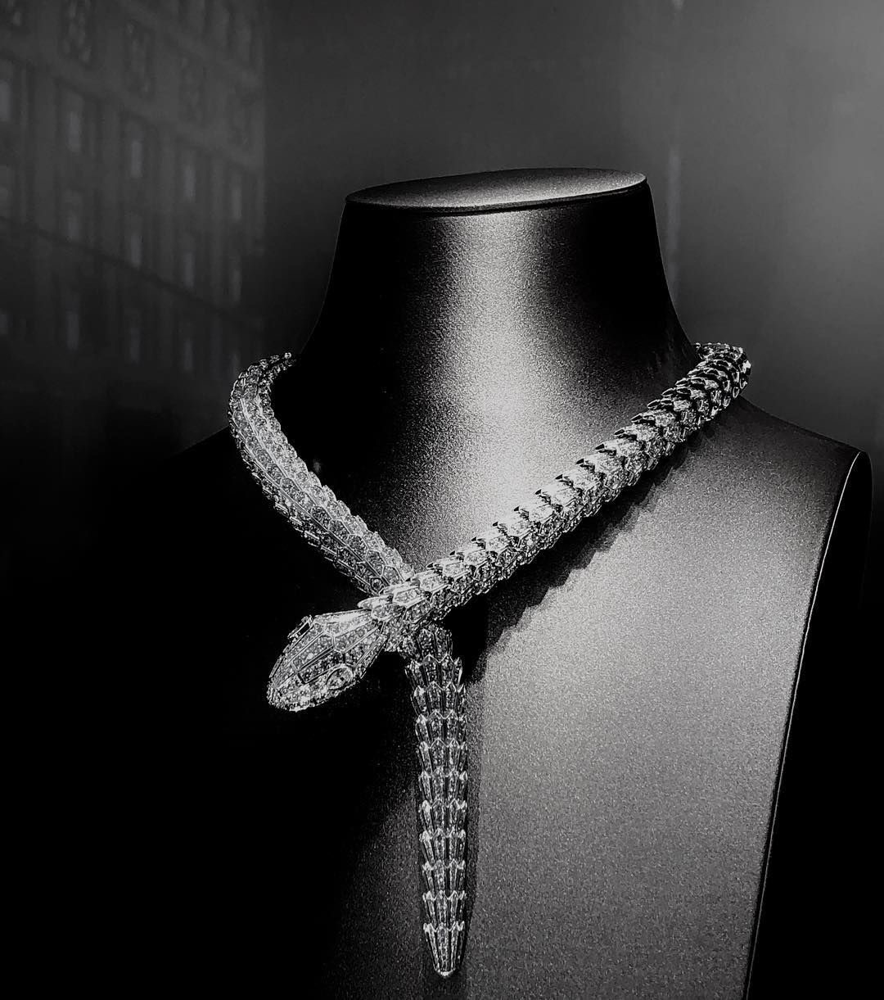

Designed to be inspired, made to last.
NSA Jewellery is an Omani brand dedicated to creating timeless and elegant jewellery, meticulously handcrafted to celebrate
everyday luxury and individuality. Each piece reflects the artistry and passion of our skilled designers,
combining modern sophistication with a touch of cultural heritage.
At NSA Jewellery, our vision is to make luxury and elegance accessible to every modern woman. We believe every woman deserves to shine with high-quality jewellery that adds a touch of confidence and beauty to her daily life, no matter her background or lifestyle. NSA Jewellery was established in Oman and is a brand dedicated to designing and producing exquisite jewellery that reflects the authenticity of Omani craftsmanship with a modern twist.
Shayma is a talented jewelry designer with a passion for creativity and craftsmanship. She brings a unique vision to NSA Jewelry and ensures every piece tells a story.
Noor is an expert in customer relations and marketing. Her commitment to understanding client needs helps us create personalized experiences for every customer.
known for her attention to detail and dedication to quality. She plays a crucial role in bringing our designs to life with precision and care.